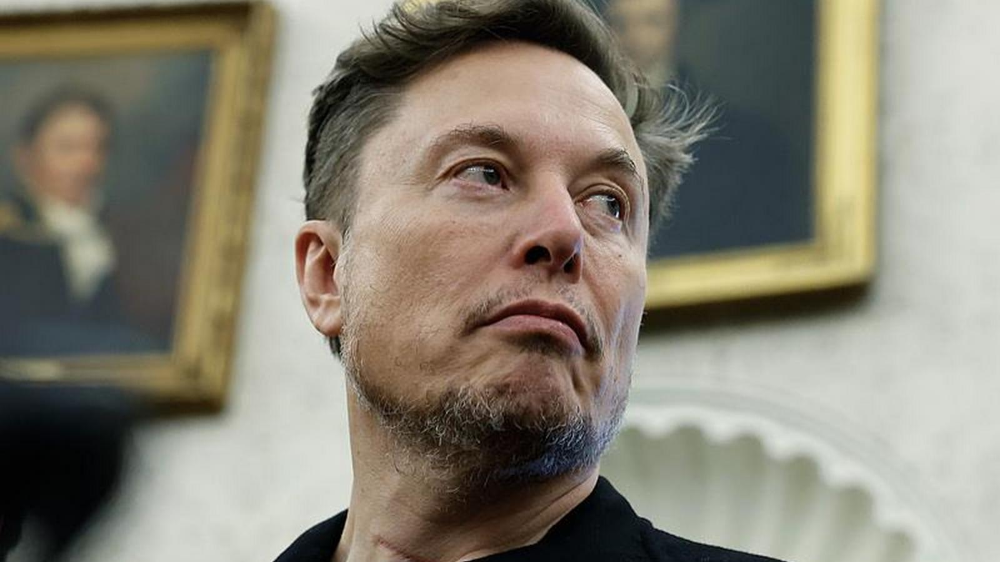

4. Inne projekty i wizja przyszłości
4.1 Neuralink, The Boring Company oraz X (Twitter)
Musk angażuje się w szereg innych zaawansowanych technologicznie przedsięwzięć:
- Neuralink: Firma zajmująca się tworzeniem interfejsów mózg-komputer, mająca na celu pomoc osobom z paraliżem oraz integrację ludzkiego umysłu z sztuczną inteligencją.
- The Boring Company: Przedsiębiorstwo budujące tunele podziemne w celu rozładowania korków w dużych miastach.
- X (Twitter): W 2022 roku Musk zakupił platformę społecznościową Twitter za 44 miliardy dolarów, zmieniając później jej nazwę na X i przekształcając ją w aplikację wielofunkcyjną.
4.2 Plany kolonizacji Marsa
Głównym długoterminowym celem Muska pozostaje uczynienie ludzkości gatunkiem wieloplanetarnym. W tym celu SpaceX rozwija potężny system rakietowy Starship – największą i najpotężniejszą rakietę w historii. Ma ona posłużyć do transportu ludzi oraz ładunków na Księżyc, a docelowo do stworzenia samowystarczalnej cywilizacji na Marsie.

Powrót do spisu treści